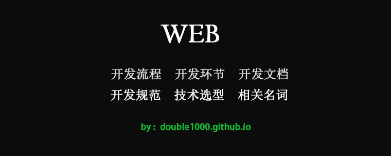

web | 开发流程环节
胡温柔
4月 06, 2017

一.相关名词解释
- 运维工程师 （代码部署工程服务） OP
- 产品经理 PM （ProductManager) 对产品负责
- MRD 产出 市场需求文档 对产品复杂分析
- UI UserInterface 界面视觉设计
- UE UserExperience 用户体验设计
- 技术经理 PM (PojectManager)
- 项目管理员,对项目负责
- 前端开发 FE - FrontEnd developer engineer
- 后端开发 RD
- 测试 QA
二.WEB开发流程
2-1. 需求确定
2-2. 分析与设计
2-2.1. 架构分析与设计
2-2.2. 业务逻辑分析
2-2.3. 业务逻辑设计
2-2.4. 界面设计
2-3. 开发环境搭建
2-4. 开发-测试-开发-测试
2-5. 文档编纂
三.WEB开发环节
开发前
123产品功能设计视觉 最终效果 （ 产品经理）视觉/交互设计 交互 操作流程（美工）开发中
1234技术规划考虑产品需求是否合理产品代码是否可以复用复杂项目是否可以拆分 （技术经理）开发后
12测试 （测试工程师QA 对网页代码进行 功能/性能测试）上线
四.WEB开发文档
1.需求文档 MRD 描述项目功能需求
2.项目开发文档 技术经理负责
- 可行性确认
- 技术选型
- 开发/线上坏境规划
- 技术开发方案设计
- 团队协作方式